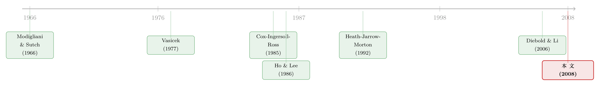

把利率曲线拆成三个人：稳态、习惯、与期待
本文读的是 Chua, Foster, Ramaswamy & Stine (2008, Review of Financial Studies)：他们把当前的远期利率曲线写成三条曲线之和——一条不随时间变的「稳态曲线」、一条由投资者期限偏好驱动的「到期日专属偏离」、一条由对未来某个日历日的预期驱动的「日期专属偏离」——并证明只要让前两者按指数衰减、后者向左平移，整条曲线的动态就满足 HJM 无套利条件。用 1964–2004 的 Fama-Bliss 美债数据做样本外检验，在 6 个月及以上的预测期，这个低参数模型的预测显著优于随机游走、纯预期假说等常用基准（24 个月期、0–5 年到期桶的 RMSE 为 143.77 个基点，随机游走是 183.90，NW 统计量 -3.928）。
1 一个让所有人都尴尬的事实
先说一个让做利率模型的人有点下不来台的事实：绝大多数期限结构模型，连最笨的随机游走都跑不赢。
这不是危言耸听。Duffee (2002) 专门写过一篇综述，把当时最流行的那些仿射模型 (affine term-structure models) 拉出来遛了一圈，结论是：在样本外预测远期利率这件事上，它们大多输给「明天的曲线等于今天的曲线」这条几乎不需要任何模型的基准。换句话说，你辛辛苦苦估了一堆参数、写了一串随机微分方程，最后被一个连参数都不用估的方法打败了。
为什么会这样？这要从利率建模的两条传统路线说起。
第一条路，是均衡模型 (equilibrium models)。 Vasicek (1977) 和 Cox-Ingersoll-Ross (CIR, 1985) 是这条路的旗手：先给短期利率写一个连续时间的自回归过程，设定它的长期均值、回复速度，再在某种风险溢价假设下推出整条远期曲线。这条路的好处是有经济学含义——每个参数都说得清是什么意思。可它有一个致命伤：拿到任何一天真实的远期曲线上去拟合，拟合得一塌糊涂。差到什么程度？作者说，理论值和经验值的差距大到「与其说是随机定价误差，不如说是模型本身设定错了」。
第二条路，是无套利模型 (no-arbitrage models)。 Ho and Lee (1986) 开创，Hull and White (1990)、Black-Derman-Toy (1990)、以及集大成的 Heath-Jarrow-Morton (HJM, 1992) 跟进。这条路反过来：先认了今天的曲线，要求模型在当下这一天与观测到的远期曲线完美吻合，再让它无套利地往前演化。好处是当天的横截面拟合无可挑剔。可坏处也正藏在这里——它被迫去拟合曲线里的测量误差，于是把噪声当信号喂进了动态方程，时间序列的演化就被带歪了。Backus, Foresi & Zin (1998) 甚至论证：强行把整条曲线钉死在观测利率上，反而可能违背无套利原则本身。
一句话概括这场僵局：均衡模型有经济故事但拟合差，无套利模型拟合好但被噪声绑架。 而两边在样本外预测上，又一起输给了随机游走。
那有没有例外？有一个，就一个。Diebold and Li (2006) 把 Nelson-Siegel (1987) 曲线的三个参数（水平、斜率、曲率）各自拟成一个自回归过程，结果在 12 个月预测期、5 年以内的到期上，显著打败了随机游走。这是黑暗里的一束光，但它是个纯粹的统计降维技巧，并不保证无套利，也没有解释那三个因子到底对应着什么经济力量。
于是一个自然的问题浮出来了：能不能既保留经济直觉、又满足无套利、还能在样本外真正赢过随机游走？ 这篇论文的全部努力，就是要同时抓住这三样。它给出的答案，简单得有点出人意料——把曲线拆成三个人。
2 核心：按「偏离的来源」拆，而不是按因子拆
这篇论文最关键、也最该被记住的一步，是它换了一个拆解曲线的维度。
以往的因子模型问的是「这条曲线能用几个因子张成」；而这篇文章问的是一个更有血有肉的问题：曲线偏离它的长期平均水平，到底是因为什么？ 作者的回答是，偏离只可能来自两种本质不同的力量，再加上那个不动的「锚」，一共三条曲线（关系式 (1)）：
这里 τ 是到期时间（从今天 t 起算还要多久那笔即期贷款才开始），f(τ;t) 是 t 日报出的、t+τ 时刻起息的瞬时远期利率。三条曲线各有各的身世，我们一条一条看。
第一条，稳态曲线 U(τ)。 它是「如果让你预测遥远未来某天的远期曲线、此刻手上所有信息都没用了，你会给出的那条曲线」。形式上写成（关系式 (2)）：
$$ U(\tau) = \lim_{s \uparrow \infty} E_t\!\left[f(\tau;s)\right] $$
它不随时间变，直接用历史上所有曲线取平均就能估出来。这是曲线的重心。
第二条，到期日专属偏离 M(τ;t)。 它的思想根子在市场分割假说与偏好习惯理论 (Preferred Habitat Theory)——Modigliani and Sutch (1966)。核心直觉是：有些市场参与者只关心自己「天然的期限栖息地」，不在乎远期利率对未来即期利率意味着什么。比如某段中期资金突然紧张，把 5 年期的远期利率顶高了，这种异动只会波及那一段到期（以及邻近到期），不会像水波一样一路传到短端、最终改写即期利率。所以作者给它一个最朴素的动态：整条曲线逐点向零均值回复（关系式 (3)）：
$$ E_t\!\left[M(\tau;T)\right] = e^{-K_m (T-t)} M(\tau;t), \qquad \tau > 0 $$
K_m > 0 是回复速度。这条曲线两端被钉在零上——M(∞;t)=0（无穷远到期没有特异偏离），以及关键的 M(0;t)=0（零到期、即期利率那一头，让位给第三条曲线去管）。直觉就是：习惯性的供需失衡是局部的、会慢慢散掉的。
第三条，日期专属偏离 D(τ;t)。 它的根子在预期假说 (Expectations Hypothesis, EH)——可以追到 Fisher (1896)。直觉是：远期利率里确实含着对未来即期利率的信息。举个作者自己的例子：如果在 2002 年 1 月 1 日，市场得知财政部要在 2003 年 1 月前后大举融资、那段时间利率会被推高，那么 2002 年初的 1 年期远期利率就会被抬升；随着时间流逝，这个被抬高的「鼓包」会整体向原点（短端）平移——因为预期中 2003 年初的高利率本身没变，只是离我们越来越近了。于是它的动态是一个平移而非衰减（关系式 (5)）：
$$ E_t\!\left[D(s-T;T)\right] = D(s-t;t), \qquad t < T < s $$
同样地，D(∞;t)=0（无穷远未来你对即期利率一无所知），而在零到期处 D(0;t)=f(0;t)-U(0)，恰好是当前即期利率与稳态即期利率之差。
到这里，最妙的地方已经显现：这套拆法不是数学上的正交分解，而是按「这个偏离会不会传导到未来即期利率」来切的。 衰减的那条（M）不传导，平移的那条（D）传导。一个是「期限偏好」的指纹，一个是「期待」的指纹。这正是它比纯统计因子模型多出来的东西——每条曲线都背着一个经济故事。
3 它把老模型当成了自己的特例
一个好框架的标志，是它能把前人收编成自己的特例。作者花了整整一节做这件事，而这恰恰是说服读者「这套拆法不是凭空捏造」的最有力证据。
预期假说，是只剩 D 的特例。 纯预期假说说「远期利率就是未来即期利率的预测」，即 E_t[f(0;T)] = f(T-t;t)——这跟关系式 (5) 一模一样。而带期限溢价的预期假说 (EH with Term Premium) 更有意思，作者通过一串代换得到（关系式 (6)）：
$$ E_t\!\left[f(0;T)\right] = f(T-t;t) - \left[U(T-t) - U(0)\right] $$
也就是说，期限溢价 λ(τ) 不是别的，正是稳态曲线自身的形状：λ(τ) ≡ U(τ) - U(0)。换句话说，「期限溢价」在这套语言里被翻译成了稳态曲线偏离即期点的那一截。 这个对应关系干净得让人会心一笑。
Vasicek 与 CIR，是只剩 U 和 M、没有 D 的特例。 这两个模型给出仿射的零息债价格 P_zc(τ;t)=e^{A(τ)-B(τ)r_t}，于是远期利率 f(τ;t)=-A'(τ)+B'(τ)r_t。作者把未来某日的条件期望展开（关系式 (7)），发现它天然裂成两块：
$$ E_t\!\left[f(\tau;T)\right] = \underbrace{\left(-A'(\tau)+B'(\tau)\theta\right)}_{\text{time-invariant}} + \underbrace{e^{-\kappa(T-t)}B'(\tau)(r_t-\theta)}_{\text{autoregressive}} $$
前一块不随时间变，正是稳态曲线 U；后一块以速度 κ 向零衰减，遵守的正是 M 的逐点回复动态（关系式 (3)）。多因子版的 Vasicek/CIR，就对应「一条稳态曲线 + 多条不同回复速度的 M」。
看出门道了吗？Vasicek/CIR 之所以拟合差，是因为它们身上缺了 D 这条会平移、能携带「期待」信息的曲线。 这篇论文做的，本质上是把均衡模型缺失的那个维度补回来，又不丢掉无套利。这一点，和那篇重估利率模型「换把尺子就翻案」的讨论（可参见《利率会不会「拐弯」？——一个被换了把尺子量出来的老问题》）在精神上是相通的：模型的成败，往往不在参数多少，而在你有没有抓住对的那个维度。
4 怎么保证无套利：HJM 这道关
拆得再漂亮，也得过无套利这道关，否则就是空中楼阁。作者选择用 HJM (1992) 的条件来验证。
HJM 的核心结论是：如果远期利率服从某个随机过程，那它的漂移 μ(t,s) 和扩散 σ(t,s) 不能各自乱定，必须满足一道约束（关系式 (8)）：
$$ \mu(t,s) = \sigma(t,s)^{\top}\left(\int_t^s \sigma(t,v)\,dv - \kappa_t\right) $$
其中 κ_t 是满足某个鞅条件（关系式 (9)）的市场价格向量。等价地，在风险中性测度下，漂移与扩散的关系更干净（关系式 (10)）：
$$ \mu^{*}(t,s) = \sigma(t,s)^{\top}\int_t^s \sigma(t,v)\,dv $$
注意一个微妙之处：在风险中性测度下，远期利率的扩散项 σ 和真实测度下完全一样，只有漂移变了。 这正是后面给衍生品定价时能用上的钩子。
作者的做法是引入一个叫无套利单元 (Arbitrage-Free Unit, AFU) 的积木：每个 AFU 是一个最基本的远期利率模型，可以由一个、两个或更多布朗运动驱动。单独一个 AFU 太简陋、刻画不了真实数据，但把多个 AFU 拼起来，就能得到一个既灵活又仍然无套利的复合模型。在具体实现里，作者用指数函数的线性组合来给 U(τ) 搭基函数，再用被布朗运动缩放的同类基函数去构造 M(τ;t) 和 D(τ;t)——这样得到的 f(τ;t) 在状态变量里是仿射的，估计起来格外顺手。
这里值得停一下：作者并没有把「指数衰减」当成一个美学选择，而是当成为了满足 HJM 而必须付的代价。要让 M 的动态无套利，它就得按指数率衰减——经济直觉（习惯偏离会散掉）与数学约束（HJM）在这里恰好握手。这种「直觉与约束撞在一起」的时刻，是好模型最迷人的地方。
5 数据与样本外检验：它到底赢在哪
说一千道一万，这套框架的成败全押在样本外预测上。作者自己也把话说死了：「我们认为，优越的样本外预测，比优越的样本内拟合更重要。」理由很实在——样本内拟合永远可以靠加参数刷上去，但正如 Diebold and Li (2006) 指出的，过拟合并不会带来更好的样本外表现。
数据。 Fama-Bliss 美国国债数据，1964 年 6 月到 2004 年 12 月。用前 20 年作训练期估出参数和状态变量，然后训练窗口每次向前滚动一个月，逐月生成样本外预测。被选中的具体模型（作者称为 CFRS 模型，取四位作者姓氏首字母）含多个 M 和 D 因子，预测时只需把状态变量按各自的衰减率往前推，比如：
$$ \hat{m}_1(T) = \hat{m}_1(t)\,e^{-\hat{K}_m(T-t)}, \qquad \hat{d}_1(T) = \hat{d}_1(t)\,e^{-2\hat{K}_m(T-t)} $$
再把推出来的状态变量翻译回远期曲线即可。
对手。 三个基准：随机游走 (Random Walk, RW)、预期假说 (EH)、带期限溢价的预期假说 (EHTP)。比较的指标是各到期桶内的横截面 RMSE 的时间序列均值；显著性用 Newey-West (1987) 估计量校正自相关和异方差后算出的 z 值（文中记作 NW-stat，负值表示 CFRS 更好）。
结果，是一条随预测期变长而越来越陡的胜利曲线。 看 0–5 年这个总桶：
- 3 个月期：CFRS 的 RMSE 是
67.95个基点，RW 是66.97——CFRS 略输，NW-stat0.901（正值）。作者很坦诚：短期预测几乎就等于横截面拟合，而 CFRS 因为参数约束更强、当天拟合不如那些更灵活的模型；何况短期里曲线的变动大半是噪声，谁也预测不了。 - 6 个月期：
89.63vs RW92.21，CFRS 开始反超，NW-stat-1.067。 - 12 个月期：
121.03vs RW133.56、EH160.93、EHTP144.58；NW-stat 对 RW 为-2.268，对 EH-3.314，对 EHTP-2.523，全面显著。 - 24 个月期：
143.77vs RW183.90，差距拉到 40 个基点；NW-stat 对 RW-3.928，对 EH-3.486，对 EHTP-2.920。
而且这种碾压在 1–5 年到期桶里更夸张：24 个月期、1–5 年桶，CFRS vs RW 的 NW-stat 高达 -5.499。
故事至此完成闭环：短期里它略逊，因为短期几乎全是噪声、谁都没办法；可一旦预测期拉到 6 个月以上，信号开始压过噪声，那条会衰减的 M、会平移的 D，就把藏在曲线里的结构兑现成了实打实的预测优势。 这正是它比 Diebold-Li 更进一步的地方——后者只在 12 个月、5 年以内显著，而 CFRS 在 6 到 24 个月、全到期段都稳定地赢，且全程保持无套利。
6 文献脉络
把这条线索捋直，会看到一段一百多年的接力。
最早的源头是预期假说，Fisher (1896) 就埋下了「远期利率含着未来即期利率信息」的种子——这是 D 曲线的祖先。但 EH 后来被证明问题重重：Cox, Ingersoll & Ross (1981) 指出多数版本的 EH 会容许套利（虽然 McCulloch (1993)、Fisher and Gilles (1998)、Longstaff (2000) 后来部分为它正名）。

另一条支流是偏好习惯理论，Modigliani and Sutch (1966) 提出市场被不同期限栖息地的参与者分割——这是 M 曲线的祖先。接着，均衡模型登场：Vasicek (1977) 和 CIR (1985) 用短期利率的自回归过程推出整条曲线，漂亮但拟合差。为了治拟合差的病，无套利模型这一支兴起：Ho and Lee (1986) 开局，Hull and White (1990)、Black-Derman-Toy (1990) 跟进，HJM (1992) 给出整条远期曲线无套利演化的统一框架，却又落入「被测量误差绑架」的新陷阱（Backus-Foresi-Zin, 1998）。再往后是市场模型（Brace-Gatarek-Musiela, 1997；Miltersen-Sandmann-Sondermann, 1997）和随机串模型（Kennedy, 1994；Goldstein, 2000；Santa-Clara and Sornette, 2001；Collin-Dufresne and Goldstein, 2003），它们能完美拟合任一天的横截面，但在有测量误差时反而会过拟合。
预测这条战线上，Duffee (2002) 给主流模型判了「跑不赢随机游走」的死刑，唯一的例外是 Diebold and Li (2006)。这篇论文正站在所有这些支流的交汇处：它用 D 收编预期假说、用 M 收编偏好习惯与 Vasicek/CIR、用 HJM 保证无套利、用低参数避免过拟合，最终在 Diebold-Li 之外，再添一个能稳定打败随机游走的样本外赢家。
7 评论与延伸（Q&A + 研究方向）
(a) 几个可能的疑问
Q：M（到期日专属）和 D（日期专属）到底差在哪？听上去都是「曲线上的鼓包」。
差在「鼓包会不会随时间挪窝、以及挪向哪里」。
M钉在固定的到期 τ 上，原地逐点衰减到零（5 年期的异动永远是 5 年期的事，慢慢消失）；D钉在固定的日历日 s 上，随时间整体向短端平移（对 2003 年某天的预期，会从 1 年期挪到 6 个月、再到即期）。前者不传导到未来即期利率，后者会。这正是按「偏离来源」而非「数学因子」拆解的全部意义。
Q：它凭什么能既无套利、又不被测量误差绑架？无套利模型不是都得钉死当天的曲线吗？
关键在于作者不要求完美拟合当天的观测曲线。文中明确假设每天的曲线是带随机测量误差观测到的，于是用光滑的指数基函数去拟一条「拟合曲线」，把残差当噪声扔掉。HJM 的无套利只施加在这条光滑的拟合曲线及其动态上，而不是施加在含噪声的原始报价上——这就同时躲开了「钉死噪声」的陷阱，又满足了 HJM。
Q：3 个月期它输给随机游走，这是不是说明模型在短期是失败的？
不必这么读。作者的解释有两层：其一，短期预测几乎等同于横截面拟合，而 CFRS 因参数约束强、当天拟合本就更紧，短期自然吃亏；其二，短期里远期曲线的变动信噪比极低，大部分是噪声，任何模型都束手无策。真正能体现模型价值的是 6 个月以上——那里信号才压过噪声。这是个诚实而非掩饰的解释。
Q：稳态曲线 U(τ) 就是历史平均，会不会太粗糙？
它确实简单到只是「所有历史曲线的平均」，但这恰恰是它的优点——
U只负责当「锚」，所有的时间变动都甩给M和D这两条带状态变量的曲线去承担。把不变的部分用最省参数的方式钉死，把自由度留给真正在动的部分，这是低参数模型能避免过拟合的原因之一。
Q：它和 Diebold-Li 的 Nelson-Siegel 自回归比，多了什么？
多了三样：一是无套利（Nelson-Siegel 因子自回归不保证无套利，CFRS 通过 HJM 验证了）；二是经济解释（三条曲线各对应稳态、习惯、期待，而不是抽象的水平/斜率/曲率）；三是预测优势的覆盖面更广（Diebold-Li 只在 12 个月、5 年以内显著，CFRS 在 6–24 个月、全到期段都稳定胜出）。
Q：这套框架只能用在国债远期曲线上吗？
不止。作者明确指出，这套「稳态 + 到期专属 + 日期专属」的拆法允许非线性、非仿射的形式，也可以用来给商品远期曲线建模——商品里「便利收益」「仓储成本」造成的局部期限异动，天然适合用
M来刻画。这是个被一句话带过、但很有延展性的口子。
(b) 几个可能的研究问题与提案
1. 把 CFRS 搬到公司债 / 信用利差曲线上
【经济故事】信用利差的期限结构里，既有「这家公司这段到期的供需失衡」（像
M，比如某只债被指数纳入、被动资金扎堆某段久期），也有「市场预期某个未来日历日会出现再融资墙 / 评级行动」（像D）。把利差曲线拆成稳态利差 + 到期专属 + 日期专属，也许能分离出「流动性/习惯」与「违约预期」两股力量。【可行性】中。数据上 TRACE + Mergent FISD 能搭出发行人层面的利差曲线，但单个发行人的债券数目稀疏、到期不连续，拟合光滑曲线比国债难得多。识别上，可借鉴本文的 Kalman 滤波 + HJM 验证，但要先解决「信用曲线的无套利条件」（违约强度的设定）。doable 但工程量大。
2. 用 D 曲线的平移做「预期事件」的事件研究
【经济故事】既然
D是钉在日历日上、随时间平移的，那么一次明确的预期冲击（比如一次 FOMC 前瞻指引、一次财政部融资公告）应当在D曲线上留下一个可识别的鼓包，并以可预测的速度向短端移动。把状态变量的时间路径对齐到事件日，可以直接「看见」预期是怎么被定价、又怎么随时间兑现的。【可行性】高。所需数据就是本文同款的 Fama-Bliss 或更高频的国债曲线 + 事件日历，识别靠事件窗口内
D状态变量的变化。与《什么在推动国债收益率？》的「当下按兵不动、三年后才发作」的冲击有对话空间。
3. 把外资持有人需求嵌进 M（到期专属偏离）
【经济故事】偏好习惯理论的现代版本，正是不同投资者群体对不同久期的需求弹性不同。外国官方部门（如各国央行储备）对美债特定久期段有强烈的栖息地偏好，他们的买卖可能正是
M曲线异动的微观来源。能不能用 TIC 数据里的外资持有久期分布，去解释M状态变量的时间变化？【可行性】中。TIC 数据按工具类型有久期信息但颗粒度粗，外资持有的「到期分布」需要拼接。识别上可把外资久期需求作为
M状态变量回归的解释变量，但内生性（利率本身影响外资配置）需要工具变量。与《谁在持有这张债券，决定了它的价格》的持有人定价思路一脉相承。
4. 检验 CFRS 在零利率下界 (ZLB) 时期是否失灵
【经济故事】本文样本截至 2004 年，没碰到 2008 之后的 ZLB。指数衰减/平移的线性仿射结构，在利率被钉在零附近、且有负利率风险时是否还成立？
D曲线的「预期」是否在 ZLB 期间被前瞻指引扭曲得不再服从简单平移？【可行性】高。数据现成（把样本延长到 2008–2021），方法照搬，只需对比 ZLB 前后的样本外 RMSE 与状态变量动态。这是个低成本、高信息量的稳健性扩展，几乎一定 doable。
8 我的判断
贡献。 这篇文章真正聪明的地方，不在于它的数学有多深（恰恰相反，它刻意保持低参数、用指数基函数），而在于它换了一个拆解曲线的维度——按「偏离会不会传导到未来即期利率」来切，于是 M 和 D 这两条曲线各自背上了一个干净的经济故事，又恰好能被 HJM 收编进无套利框架。它同时收编了预期假说、偏好习惯、Vasicek/CIR 三套老理论作为特例，这种「把前人变成自己的脚注」的本事，是一个框架成熟的标志。而最硬的证据是样本外：在 6 个月以上的预测期稳定、显著地打败随机游游走，把当时几乎无人能过的那道坎过了。
对识别的担忧。 我最在意三点。其一，M 与 D 的可分离性其实是靠函数形式假设撑起来的——M 衰减、D 平移，这个区分在数学上干净，但在数据里，一个既衰减又平移的鼓包，到底该归给谁，很大程度由先验设定的衰减率决定，Kalman 滤波只是在给定结构下找最优状态。换一组衰减率约束，分解可能就变了。其二，3 个月期输给随机游走这件事虽有解释，但也提醒我们：这个模型的价值高度依赖「长期限里信号压过噪声」这个前提，一旦市场进入纯噪声驱动的阶段，它没有额外优势。其三，样本期只到 2004，整个检验落在一个利率相对正常、没有 ZLB、没有 QE 大规模扭曲供需的世界里——这正是我最想看到后续补上的。
后续想看到什么。 三件事：一是把样本延长到 2008 后的 ZLB 与 QE 时期，看 M/D 的分解是否还稳；二是把这套拆法搬到信用利差曲线，检验「习惯」与「违约预期」能否被同样分离；三是给 M 和 D 的状态变量找到真实的微观对应物（外资久期需求、前瞻指引冲击），把这个 reduced-form 框架往结构化推一步。能做到第三点，这套漂亮的拆解就不只是一个会预测的统计机器，而是一面能照见利率市场内部力量的镜子了。
参考文献
- Backus, D., Foresi, S., & Zin, S. (1998). Arbitrage opportunities in arbitrage-free models of bond pricing. Journal of Business & Economic Statistics 16(1), 13–26.
- Black, F., Derman, E., & Toy, W. (1990). A one-factor model of interest rates and its application to Treasury bond options. Financial Analysts Journal 46(1), 33–39.
- Brace, A., Gatarek, D., & Musiela, M. (1997). The market model of interest rate dynamics. Mathematical Finance 7(2), 127–155.
- Chua, C. T., Foster, D., Ramaswamy, K., & Stine, R. (2008). A dynamic model for the forward curve. Review of Financial Studies 21(1), 265–310.
- Cox, J. C., Ingersoll, J. E., & Ross, S. A. (1981). A re-examination of traditional hypotheses about the term structure of interest rates. Journal of Finance 36(4), 769–799.
- Cox, J. C., Ingersoll, J. E., & Ross, S. A. (1985). A theory of the term structure of interest rates. Econometrica 53(2), 385–407.
- Diebold, F. X., & Li, C. (2006). Forecasting the term structure of government bond yields. Journal of Econometrics 130(2), 337–364.
- Duffee, G. R. (2002). Term premia and interest rate forecasts in affine models. Journal of Finance 57(1), 405–443.
- Heath, D., Jarrow, R., & Morton, A. (1992). Bond pricing and the term structure of interest rates: A new methodology for contingent claims valuation. Econometrica 60(1), 77–105.
- Ho, T. S. Y., & Lee, S.-B. (1986). Term structure movements and pricing interest rate contingent claims. Journal of Finance 41(5), 1011–1029.
- Hull, J., & White, A. (1990). Pricing interest-rate-derivative securities. Review of Financial Studies 3(4), 573–592.
- Kennedy, D. P. (1994). The term structure of interest rates as a Gaussian random field. Mathematical Finance 4(3), 247–258.
- Modigliani, F., & Sutch, R. (1966). Innovations in interest rate policy. American Economic Review 56(1/2), 178–197.
- Nelson, C. R., & Siegel, A. F. (1987). Parsimonious modeling of yield curves. Journal of Business 60(4), 473–489.
- Newey, W. K., & West, K. D. (1987). A simple, positive semi-definite, heteroskedasticity and autocorrelation consistent covariance matrix. Econometrica 55(3), 703–708.
- Vasicek, O. (1977). An equilibrium characterization of the term structure. Journal of Financial Economics 5(2), 177–188.